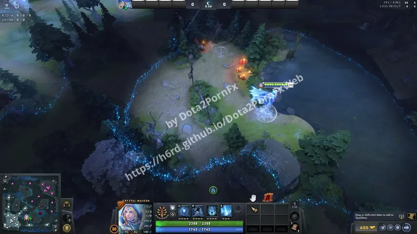
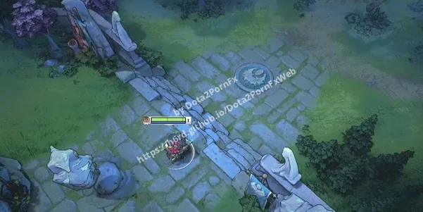
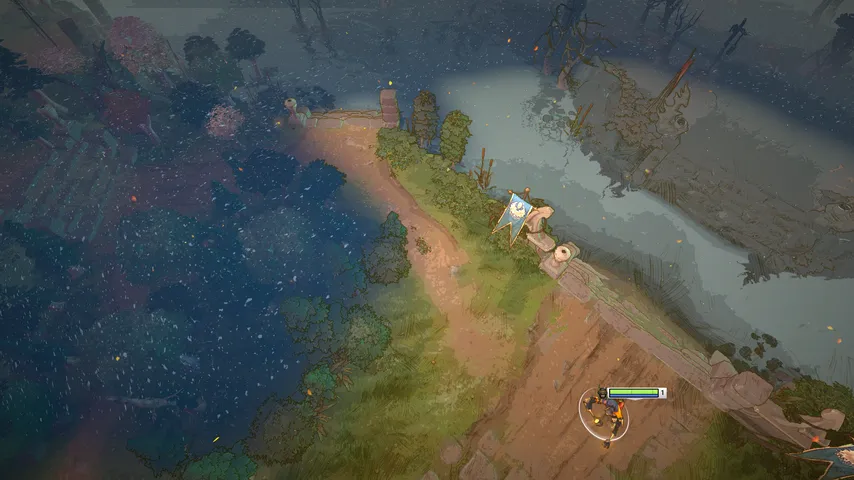

Dota 2 Shaders mods
Replaces the fog of war effect.

Aghanim Labyrinth Aghanim Purple
Aghanim Purple Aghanim Peach
Aghanim Peach Aghanim White
Aghanim White Aghanim Green
Aghanim Green Aghanim Red
Aghanim Red Wave Purple
Wave Purple Wave Peach
Wave Peach Wave White
Wave White Wave Green
Wave Green Wave Red
Wave Red
Diretide (outline) Purple Outline
Purple Outline Wave Lite Blue
Wave Lite Blue Wave Lite Aqua
Wave Lite Aqua Wave Lite Pink
Wave Lite Pink Wave Lite Purple
Wave Lite Purple Wave Lite Peach
Wave Lite Peach Wave Lite Green
Wave Lite Green Wave Lite Red
Wave Lite Red Wave Lite White
Wave Lite White Wave Lite Yellow
Wave Lite Yellow Aghanim Green Lite
Aghanim Green Lite Aghanim Purple Lite
Aghanim Purple Lite Aghanim White Lite
Aghanim White Lite Aghanim Yellow Lite
Aghanim Yellow Lite Aghanim Red Lite
Aghanim Red Lite Cartoon Shader
Cartoon Shader Simple Minify Shader
Simple Minify Shader
Winter